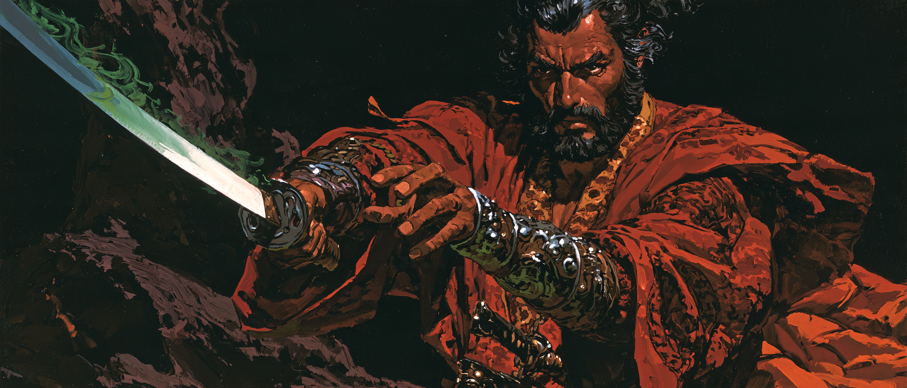

Act III, Chapter XLI
Five remained of Thalane’s order, and that truth sat with them at the fire while the others watched from the rocks, unable to understand a word.
Silar, who had followed rumor of dragons across the sea, asked how long they had sought Thalancord. Only the hours Kojin had already seen, Vaerek told him, though the search for the Drake’s brothers and sister had gone on far longer. He named himself Rathkin, a son of a Shasirian mother. Silar took his hand. He was of Shasir as well. Neither had met another Sethian in a long time. He spoke aside to Kojin, who laughed, and called it fate: they had not meant to be at Redroot at all. The Interval had begun, and Thalancord was missing.

The five around the fire were all that was left. Their mentor and most of their companions had been taken by the curse. Vaerek named his companions. Silar noted the blindfold and was told there were other senses than sight.
Silar had come here when he learned that a power was fighting Olesh’s venom and that the power might be draconic. He had met Thalancord, as the order all had. The charge given down from Thalane was to find a cure if one existed, and if not to cut the afflicted down and give the bodies to flame. They had come to Redroot on a thin hope, found the village already fallen, and done what the duty required.

An interval, Silar said, was the turning of the cycle. Olesh had been slain three times and had risen three times. The old way was to gather militias without letting the curse pool, find where the madness gathered, and threaten it until Olesh came to restore it, and then to kill him. After great storms the land itself announced his return — thunders, rains, winds. Animals went frantic and rabid, forest creatures and household pets turned. Telorin said each country seemed to wear a different face of the same threat, and that something godlike sat behind it. He named Mintas Fae of Hesk, Vehem Adahr of the Samafi, and Vorn of the lands below. Silar poured wine called Tears of the Rains and said that here, at least, the enemy had a name and a season. After the last battles Thalancord had simply vanished. No body. The sky darkened for weeks; when the rains broke and the woods went loud, Olesh was returned.

In the morning they would walk a country they had not seen in two years, asking for Thalancord at every door: Kuroishi and its smith at its Ash-Forge, Fort Red Eve, a mountain shrine, Minashi, a Tea Village, and last Kireji in the valley.
They would travel together. Telorin and Perstrin set to work on scrolls, for translation. Vaerek asked what Silar knew of the Vigors. Silar called fire into his palm and said he served the first wardens of the world. Vaerek said he used them too, though not as a sorcerer, and walked him from the fire to tell him how that had come to be.
Morning came clear. Hanto fetched an odachi and met Galand in the clearing. The blade took on a green light. Galand’s eyes went gold, and they struck, steel against steel. Until Galand pulled back, and he knew what occurred — his soul pulled thin, just as Eig’s glaive had pulled. Hanto called his victory chance. The blade was Kuranata, Blade of the Damura, bound to cut spirit as well as flesh, for blood alone did not always finish Olesh’s work. Silar did not think the enchantment came from Raim. Thalane himself had come from the west, and that was all he knew.

Vaerek and Saoirse closed the wounds. Then they spoke the news they had spared the night before. A slayer of Raim walked. His name was Eig. He had killed a brother of Thalancord and maimed another, and two more lords had been lost to cataclysm besides. The remnant heard it as a cold thing. Silar had already heard of disaster in his homeland, and of a dragonlord taken there. Whether that force served Olesh, no one could say.
The scrolls opened speech between the companies. Galand embraced Hanto, named himself a vestige of the Light Soul, and unfurled wings. Kojin asked how the slayer fought. If Eig was already in this country, Thalancord would not survive.
They took the high road of Kaiden, where the land was still fair and the trees showed the last storm. Saoirse left the column with Aoifa, called birds down, and asked about the weather. The storm was worse than others, they told her, longer and louder. Kojin said the same: two weeks, sometimes three, then a silence like an ending.
Kuroishi sat on a high river. Folk bowed to Hanto and stared at the rest. Children asked Galand whether a dragon was like the Nomura-beasts from the ridges, seven-legged and three-headed. Telorin found the Ash-Forge, a heart of flame that could take metal ordinary fire could not, and watched a smith fold mundane metal.

Perstrin looked at the dust in the street and longed for his past life. They spread through the village to ask again. Saoirse kept one question for the birds: whether their migrations still sang of a great pink tree.